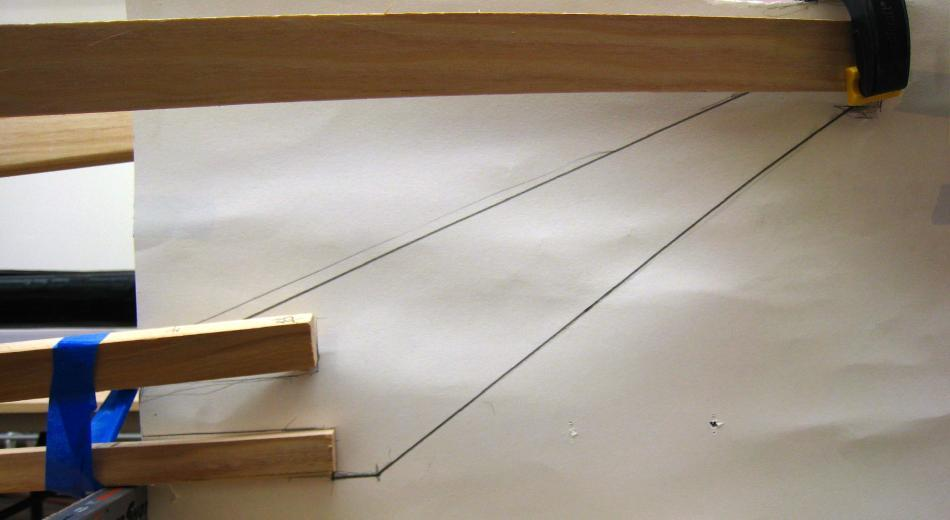

| Stem Plates | Menu Last Page Next Page |
|

Place a sheet of construction paper atop the strongback insuring that it extends past the end of the gunwales. Staple the paper to the chine to hold it in place. The gunwale have been cut to a distance 3 feet ahead of cross section 1. For the Sea Bea (shown), the keel and chines are cut off at 27" from cross section 1. These lengths were determined by the stem "slope" that looks best when viewed from the side. In this case a steeper slope was desired . A shallower / longer slope would have required a shorter keel and chines. The length of the chines is determined by how easily the chines stringers can be brought together along the centerline of the kayak.
|
|